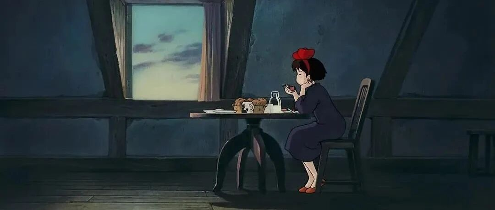

真是一本专治「精神内耗」的好书！
点击关注 秋秋很开心

图：@秋秋
文：@秋秋
大家好，我是秋秋～
前几天放假回老家，期间接到了南方都市报的采访。
聊天发现，我好像真的很少有焦虑、精神内耗的感觉了。感谢这本书，赶紧分享给大家。
书的名字是：《人生的智慧》。

作者叔本华，西方著名哲学家。
读这本书全程我都带有一种喜悦感，好像从书里伸出一双手和你紧紧握住一起，有种灵魂上的共鸣。
里面关于财富、幸福、未来的观点，我都收益颇丰。
这真的是一本绝佳的书！
1、关于财富
作者叔本华认为，财富包括精神+健康+金钱。
其中健康，是压倒一切外在的好处。
一个健康的乞丐，也的确比一个染病的君王幸运。

其次，一个人精神能力的范围，尤其决定性地限定了他领略高级快乐的能力。
如果这个人的精神能力相当有限，他只能享受感官的乐趣、低级的社交、庸俗的消费和家庭生活。
所以，最高级、最丰富多彩以及维持最为恒久的乐趣，是精神思想上的乐趣。
我给自己做了一个获得爱（力量源泉）的壁纸：

其中一大半，都是精神上的。
而对于金钱，我们观点一致。
金钱除了能满足人的真正、自然的需求以外，对于真正幸福没有多大影响。
我们应把现有的金钱视为能够抵御众多可能发生的不幸和灾祸的城墙，而并不是一纸任由我们寻欢作乐的许可证，或者不花天酒地就是对不起自己似的。

我在达到金钱够基础生活保障之后，就不再以追求金钱为目标，转而拥有闲暇和自由，也是这本书带给我的勇气。
叔本华说：一副健康、良好的体魄和由此带来的宁静和愉快的脾性，以及活跃、清晰、深刻、能够正确无误地把握事物的理解力，还有温和、节制有度的意欲及由此产生的清白良心——所有这些好处都是财富、地位所不能代替的。
而对于拥有多少财富合适，书里也有阐述：
仅仅考察一个人的实际拥有毫无意义，这种情形就犹如在计算一个分数时，只计算分子而忽略了分母一样。
一个人是否富有，还要看他的欲望和精神世界。
而闲暇，有时候也是一种惩罚。
作者说：一旦脱离了那狭窄的挣钱领域，有些人就一无所知。他们的精神空白一片，对挣钱以外的一切事物毫无感知。
人生最高的乐趣——精神方面的乐趣——对他们来说，是遥不可及的事情。既然如此，他们就只能忙里偷闲地寻求那些短暂的、感官的乐趣——它们费时很少，却耗钱很多。
这里作者说的非常犀利。
但不上班之后，我也发觉，闲暇时间固然很好，但只对能独处的人是一种恩赐，他们可以阅读、写作、健身，发展爱好，内心也不慌张。
对于没有摆脱束缚的人，闲暇会带来巨大的无聊感、恐慌感。担心钱不够花、担心意外，其实反而一种惩罚。

2、关于幸福
作者依旧认为，和精神、健康、金钱有关，但也要考虑当下和节制。
比如当下：
相比之下，高兴的心情直接就使我们获益。它才是幸福的现金，而其他别的都只是兑现幸福的支票。
这段话对我感触很大，之前我可能为了赚钱，牺牲健康和当下去达成目标。
可追求的外在物质条件，前面付出很多后面才能获取到，反而高兴的心情在你高兴的此时此刻，就直接给人以愉快。

当下和闲暇有关。
亚里士多德说：幸福属于那些能够自得其乐的人。这是因为幸福和快乐的外在源泉，就其本质而言，都极其不确定，并且为时短暂和受制于偶然。
想要长久达到幸福这一目的，条件就是拥有独立和闲暇。
因此，“聪明人”会乐意以俭朴和节制换取上述二者。
一个内在丰富的人对于外在世界确实别无他求，除了这一否定特性的礼物——闲暇。
他需要闲暇去培养和发展自己的精神才能，享受自己的内在财富。他的要求只是在自己的一生中，每天每时都可以成为自己。
所有局限和节制，都有助于增进我们的幸福。
叔本华说：我们的视线、活动和接触的范围圈子越“狭窄”，我们就越幸福；范围圈子越大，我们感受的焦虑或者担忧就越多。
原因就在于意欲受到的刺激越少，我们的痛苦也就越少。
此外，我们生活的关系应该尽可能的简单，只要不至于产生无聊，都会有助于增进我们的幸福。

另外，作者关于幸福的定义，也有新的解释。
幸福不是追求快乐，而是没有痛苦。
这个有点类似《黑天鹅》里面说的，痛苦是肯定的，快乐是否定的。
因此，谁要从幸福论的角度衡量自己一生是否过得幸福，他需要一一列出自己得以躲避了的祸害，而不是曾经享受过的欢娱、快感。
如果能够达到一种没有痛苦，也没有无聊的状态，那就确实得到了尘世间的幸福。
作者希望我们：
不应该以痛苦为代价去购买快乐，甚至只是冒着遭受痛苦的风险去这样做也不行。
否则，我们就会为了那些否定、因而是虚幻的东西而付出了肯定和实在的东西。
但如果我们牺牲欢娱以避免痛苦，那我们肯定获得收益。

关于未来，这本书对我影响最大的是：不必考虑太多未知。
如死亡这种确切会发生的事情，每个人都会面临，就不必焦虑；而不知道何时发生的意外，你心态上就可以当作不会发生。
当然可以做好防范准备，只是心态上释怀最好。
我Fire退休之后，经常被问到钱通货膨胀怎么办，你突然大病怎么办？
也是叔本华的书，让我顿悟很多。
☕️
最后，我很喜欢作者的一段阐述：
如果一个人从一开始就拥有足够的财产，能够享有真正的独立自足，也就是说，可以不用操劳就能维持舒适的生活——甚至只够维持本人而不包括他的家人就行——那就是一种弥足珍贵的优越条件；
因为这个人就能以此摆脱纠缠人生的匮乏和操劳，他也就从大众的苦役中获得了解放——而这苦役本是凡夫俗子的天然命运。只有得到命运如此垂青和眷顾的人，才可以是真正自由的人。这样的人才成为自己的主人，是自己的时间和自己的力量的主宰。
每天早晨他就可以说上一句：“今天是属于我的。”
我想我之前努力存钱，想靠被动收入满足基本需求就是像作者所说的这样吧，只希望每一天属于自己的。

总结：
这本书，让我们把幸福放到当下，放到精神，放到健康，而保证基础的金钱条件也是必要的，除此之外不需要更多。
往期精彩内容：
作者介绍：
秋秋，26岁开始退休了！自由职业者，喜欢写东西、拍视频。希望能和你分享，学习、成长、生活中的小美好～

原创文章，转载请告知本人并标注来源
工作联系：17865514429 （微信）
请注明来意 :)
@小红书、抖音、快手：秋秋很开心
喜欢记得星标，让我们一起成长